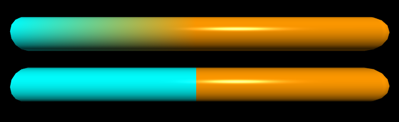

If you're new to Python
and VPython: Introduction
A VPython tutorial
Pictures of 3D objects
curve |

The curve object displays straight lines between points, and if the points are sufficiently close together you get the appearance of a smooth curve.
Details of the GlowScript curve object
Each point along a curve has attributes pos, color, radius, and retain, and these attributes can be different for each point. Here we create a curve with overall attributes of color and radius, then add four points to the curve:
square = curve( color=color.yellow, radius=0.05 )
square.append( pos=vector(0,0,0), color=color.cyan )
square.append( vector(0,1,0) ) # shorthand
square.append( vector(1,1,0) )
square.append( pos=vector(1,0,0), radius=0.1 )
square.append( vector(0,0,0) )
Setting radius (of the cross section of the curve) or color for individual points overrides the color and radius specified for the curve as a whole. The default radius is 0, which draws a thin curve. A nonzero radius makes a "thick" curve, but a very small radius may make a curve that is too thin to see.
You can also specify a list of points when creating a curve:
c = curve( pos=[vector(-1,0,0),vector(0,1,0),
vector(0,0,1)], color=color.cyan )
Retaining a limited number of points
When appending a point to a curve you can specify how many points should be retained. The following statement specifies that if there are already 30 points in the curve, the oldest one should be deleted and the new point added.
c.append( pos=vector(2,-1,0), retain=30)
The curve attributes
Here are attributes for individual points or for the curve as a whole:
color Color of a point; if specified for the curve as a whole, it specifies the color of any points for which no specific color was given.
radius Radius of the cross-section of this segment of the curve; if specified for the curve as a whole, it specifies the radius of any points for which no specific radius was given.
visible If False, point is not displayed; if False for the curve as a whole, no points are displayed.
retain Specify how many points to retain.
A curve also has the attributes origin, size, axis, up, shininess, and emissive.
No texture, opacity, or compounding: Currently curves cannot be transparent, it is not possible to apply a texture, and a curve cannot be part of a compound object.
Moving, reorienting, and resizing a curve
Point positions are relative: A point whose pos is vector(2, 1, 0) is of course normally displayed at location vector(2, 1, 0). However, the position of a point is relative to a curve's own origin value, which by default is vector(0, 0, 0). If you change the curve's origin value to vector(10, 6, 5), the point is displayed at the location vector(12, 7, 5); that is, the point is displayed 2 to the right, 6 above, and 0 in front of the curve's position vector(10, 6, 5). Another way of saying this is that the display location is the vector sum vector(10, 6, 5) + vector(2, 1, 0). This means that you can quickly and efficiently move the entire curve just by changing the curve's origin value. The pos value of an individual point does not change; it's just that the point is displayed in a shifted position. As a result, moving an entire curve is very fast.
Similarly, changes to size, axis, up, shininess, and emissive immediately and quickly change the size of the curve, its orientation in space, and the appearance of its surface. When you specify the position of a point, it is relative to an origin at vector(0,0,0) and with the standard axis vector(1,0,0). Changing the size does not change the radius; it just moves the points closer or farther apart.
Rotating a curve
As with other objects, tne way to change the orientation of the entire curve is to change the curve's axis. You can also rotate the entire curve about a specified axis. If you don't specify an origin, rotation will occur around the origin of the curve:
c.rotate( angle=ang, axis=a, origin=o )
c.rotate( angle=ang, axis=a )
Curve methods
The basic aspects of the GlowScript curve object are the same as the Classic VPython curve object. You create a curve and append points to it. However, modifying existing points is not done directly but instead by using a powerful set of functions, and this change makes it possible to display curves much more rapidly. In Classic VPython, the possibility of direct modification of the positions meant that the entire curve had to be reprocessed every time it was rendered, on the chance that some undetected change had occurred.
The following are useful for modifying a curve named "c" (full documentation below):
c.npoints The total number of points currently in the curve.
c.append(...) Add a point or several points to the end.
c.unshift(...) Insert a point or several points at the start.
c.splice(...) Insert a point or several points anywhere.
c.modify(...) Modify the Nth point.
c.clear() Remove all points.
data = c.pop() Get the data for the last point and remove it.
data = c.shift() Get the data for the first point and remove it.
data = c.point(N) Get the data for the Nth point.
data = c.slice(start, end) Get the data for a list of points.
Appending points
Suppose you have created a curve named c. You can add points to the curve one at a time, like this:
c.append(pos=vector(-1,0,0), color=color.red,
radius=0.05)
c.append(pos=vector(0,1,0), color=color.cyan,
radius=0.15)
c.append(pos=vector(1,0,0), color=color.red,
radius=0.05)
This creates the following image:

If you don't need to specify color or radius you can just give a list of positions, either as individual positions or in a list of positions:
c.append( vector(-1,0,0), vector(0,1,0), vector(1,0,0) )
c.append([vector(-1,0,0), vector(0,1,0), vector(1,0,0)])
Suppose you have created a curve named c, and p represents either just a position vector (as just shown above) or a full description of a point in either of the following forms:
p = {pos:vector, color:a vector, radius:a number, visible:true or false}
p = dict(pos=a vector, color=a vector, radius=a number, visible=true or false)
c.append( p1, p2, p3 ) # add several points
c.append([p1, p2, p3]) # add several points
pts = [p1, p2, p3]
c.append(pts) # add several points
You can also add several points that all have the same color, radius, etc.:
c.append(pos=[p1, p2, p3], color=color.green)
Manipulating points
Here are details on getting data about points in a curve named "c", or modifying them.
npoints
c.npoints # the number of points in the curve
append
c.append(...) # add points at the end (see above)
unshift
c.unshift(p1, p2, p3) # insert points at start
pts = [p1, p2, p3]
c.unshift(pts) # insert points at start
The splice method inserts new points starting at location "start" (where 0 is the first point of the curve), deleting "howmany" points before doing the insertion:
c.splice(start,howmany,p1,p2,p3) # insert
pts = [p1, p2, p3]
c.splice(start,howmany,pts) # insert
The modify method lets you change specified attributes of a point:
c.modify(N, # modify point number N
pos=p, color=c, radius=r, visible=v)
c.modify(N, x=3, y=5) # changing x and y but not z
c.modify(N, vector(x,y,z)) # change only pos
clear
c.clear() # remove all points from curve
pop
data = c.pop() # get & remove last point
shift
data = c.shift() # get & remove first point
point
P = c.point(N) # get a point in the form
# {pos:p, color:c, radius:r, visible:v}
# P.pos is p, P.color is c, etc.
slice
data = c.slice(2,4) # get a list of
# points from point no. 2 through point no. 3,
# each in the form
# {pos:p, color:c, radius:r, visible:v}
# The first point is 0, the last point is -1
Interpolation of colors
The curve machinery interpolates colors from one point to the next. If you want an abrupt change in color, add another point at the same location. In the following example, adding a cyan point at the same location as the orange point makes the first segment be purely cyan.
c = curve(color=color.cyan, radius=0.1)
c.append( vector(-1,0,0) )
# add an extra cyan point:
c.append( vector(0,0,0) )
# repeat the same point:
c.append( pos=vector(0,0,0),
color=color.orange )
# add another orange point:
c.append( pos=vector(1,0,0),
color=color.orange )
In the image shown here, the upper thick curve, made without the second cyan point, has three pos and color points, cyan, orange, orange, left to right, so the blue fades into the orange. The lower curve includes the extra cyan point and has four pos and color points, cyan, cyan, orange, orange, so there is a sharp break between blue and orange.
 |